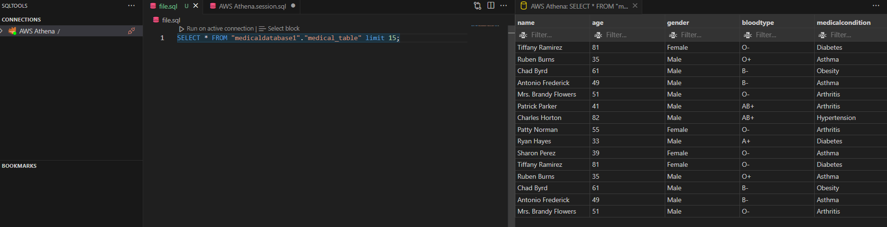
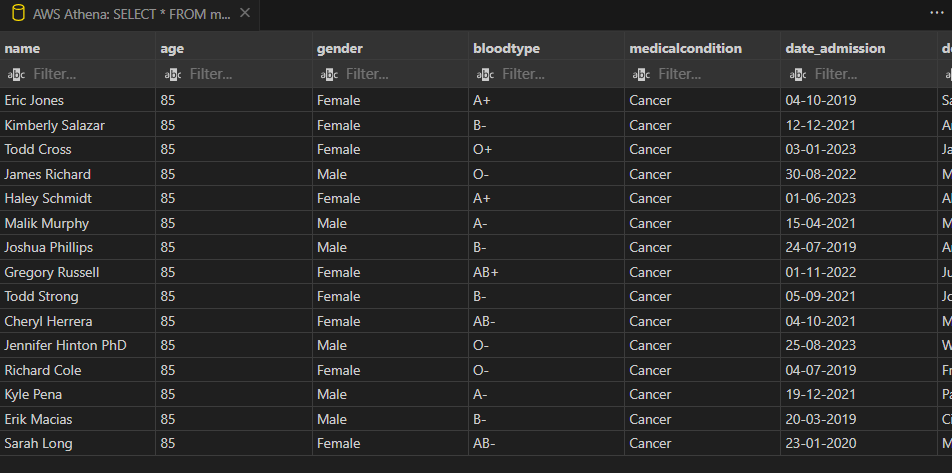
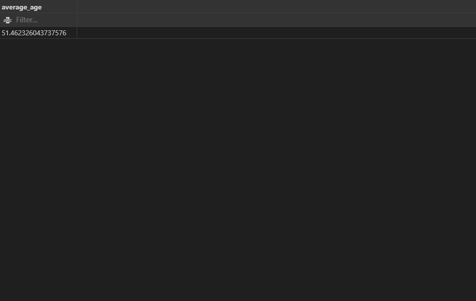
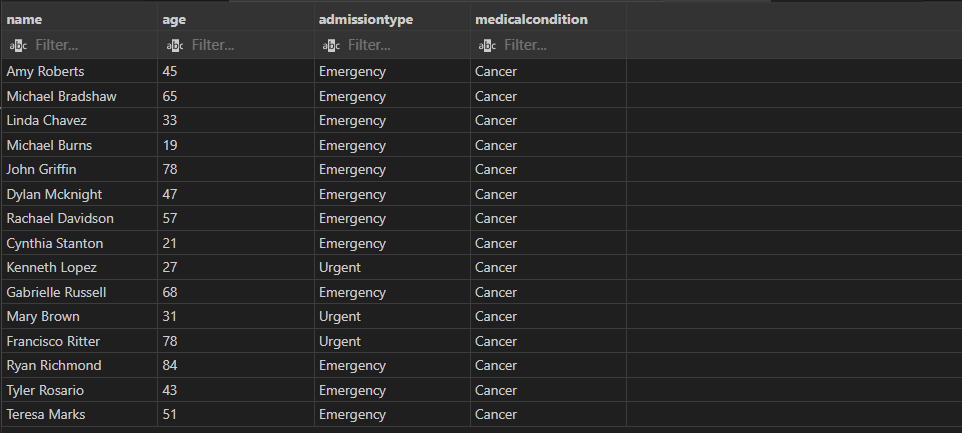
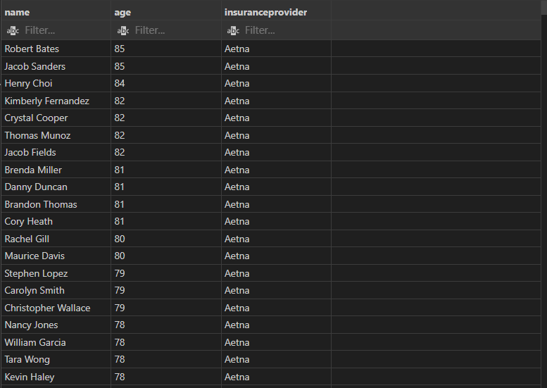
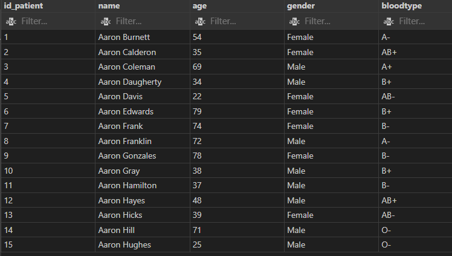

This project is focusing on developing basic skills using SQL on AWS. In this project I learned a few interesting skills:
How to create a database on AWS
How to create a table in a database
How to insert data into a table
How to query in Athena and from VS code
How to delete data from a table
And many other related skills...
During my experimentation with AWS, I looked into the AWS Machine learning functionality. In AWS I created a ML model to predict
the costs of treatments for patients. The model was trained on a dataset on the same.
Setting up the table in AWS
Learning the basics of AWS was very interesting and I am excited to challenge myself further.
First, I had to upload the data to AWS. Given I was avoiding spending money. I opted to use S3. I created
the necessary buckets and uploaded my data.
To create the table in AWS, I used the Athena service. Here, I ran into an issue. I initially tried to use
AWS Glue Crawler to create the table. However one column had issues, not picking up all values. To fix this
I used an SQL query to create the table.
So I added a table, specifying the data types for each column, and the starting and ending properties needed. This code when run fixed the missing value problem.
CREATE EXTERNAL TABLE medicaldatabase1.medical_table (
name STRING,
age BIGINT,
gender STRING,
bloodtype STRING,
medicalcondition STRING,
date_admission STRING,
doctor STRING,
hospital STRING,
insuranceprovider STRING,
billingamount DOUBLE,
roomnumber INT,
admissiontype STRING,
date_discharge STRING,
medication STRING,
testresults STRING
)
ROW FORMAT SERDE 'org.apache.hadoop.hive.serde2.OpenCSVSerde'
WITH SERDEPROPERTIES (
"separatorChar" = ",",
"quoteChar" = "\""
)
STORED AS TEXTFILE
LOCATION's3://medicaltestdatatom/'TBLPROPERTIES (
'has_encrypted_data'='false',
'skip.header.line.count'='1'
);
Setting up VS code connection and first query
With the data in a database and table format, I could run queries on the data in AWS. However, my aim was to be able to use it in my
standard text editor, VS code.
To do this, I had to install the AWS toolkit and configure it to connect to my AWS account.
This allowed me to run queries in VS code.
SELECT * FROM medicaldatabase1.medical_table limit 15;
Result:

Practice running SQL queries
Now for the actual bit of the project. I wanted to practice running SQL queries on the data. To do this
I tasked Chat GPT for 5 increasing difficult tasks to test myself (I did more, but I'm not writing them
all up, this takes forever!):
1: Data Retrieval with Filtering and Sorting:
Retrieve patients with a diagnosis of Cancer and sort them by age in descending order. This task
combines filtering based on medical condition and sorting based on patient age, providing a good
opportunity to practice both aspects of SQL query construction.
FROM medicaldatabase1.medical_table
WHERE medical_condition = 'Cancer'
ORDER BY age DESC;
Result:

2: Aggregation:
Calculate the average age of all patients. Aggregation functions are fundamental to SQL, and
calculating averages is a common task. This task allows you to practice using the AVG function
and understanding basic statistical analysis.
SELECT AVG(age) AS average_age
FROM medicaldatabase1.medical_table;
Result:

3: Conditional Logic:
Identify patients who have a treatment status of 'Urgent' and 'Emergency' and have a diagnosis of Cancer.
Conditional logic allows you to filter data based on multiple criteria, and this task involves combining logical
conditions to retrieve specific subsets of patient data.
SELECT name,age, admissiontype, medicalcondition
FROM medicaldatabase1.medical_table
WHERE admissiontype IN ('Emergency', 'Urgent')
AND medicalcondition = 'Cancer'
LIMIT 15;
Result:

4: Data Modification:
Retrieve the names, ages, and insurance providers of patients who have been diagnosed with Cancer or
Diabetes, have received an Urgent treatment, and are covered by either Aetna or Cigna insurance.
Sort the results by insurance provider and then by age in descending order.
SELECT name, age, insuranceprovider
FROM medicaldatabase1.medical_table
WHERE (medicalcondition = 'Cancer' OR medicalcondition = 'Diabetes')
AND admissiontype = 'Urgent'
AND insuranceprovider IN ('Aetna', 'Cigna')
ORDER BY insuranceprovider, age DESC;
Result:

5: Join Operations:
Create a new table called patients_info with the following columns: id_patient, name, age, gender and bloodtype.
CREATE EXTERNAL TABLE medicaldatabase1.patients_info (
id_patient INT,
name STRING,
age INT,
gender STRING,
bloodtype STRING,
medicalcondition STRING
)
LOCATION 's3://medicaltestdatatom/';
INSERT INTO medicaldatabase1.patients_info (id_patient, name, age, gender, bloodtype, medicalcondition)
SELECT ROW_NUMBER() OVER (ORDER BY name) AS id_patient, name, age, gender, bloodtype, medicalcondition
FROM medicaldatabase1.medical_table;
SELECT *
FROM medicaldatabase1.patients_info
WHERE id_patient IS NOT NULLlimit 15;
Result:

This one was going to be a bit longer. Modifying the medical_table to replace the
patient data with patient_id. However, in the table type I was using in AWS this isnt a possible feature.